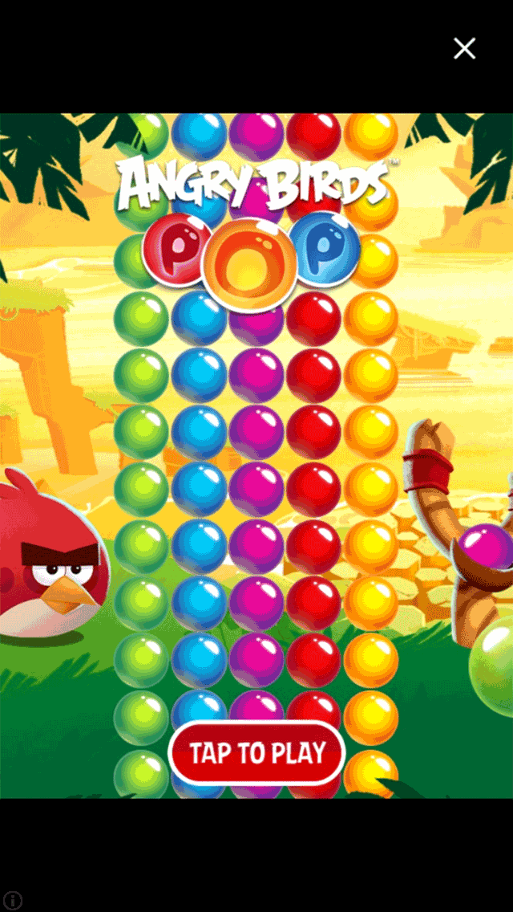
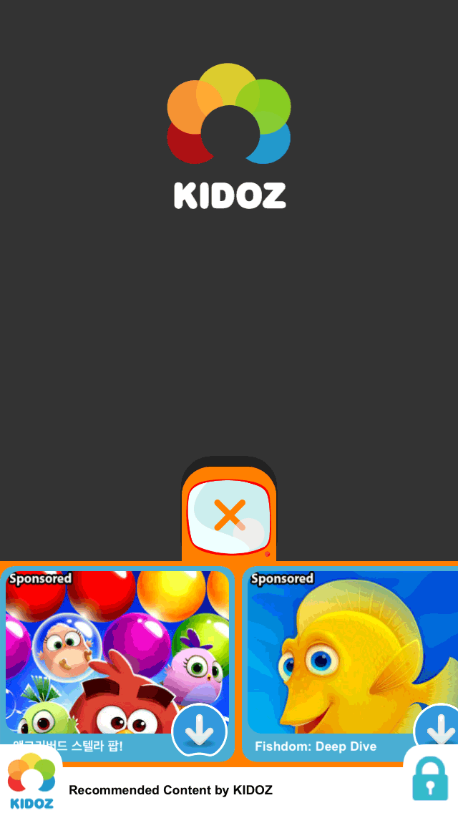

Monetization Guide
This guide will help you navigate options for monetization.
What is Monetization?
Monetize is a tech jargon term which basically means “make money,” but in a somewhat kinder tone. When applied to building software applications (apps), some people are willing to create them as a hobby, but if you’re a business or even an individual, it’s usually necessary to earn income from your hard work.
As the mobile app marketplace has evolved, pressure has increased on pushing costs down. Many users expect apps to be free, and most want to use/play an app before they potentially pay money for it. In other segments like console gaming, it’s common to pay
This guide will help you understand the monetization options and methods available to Solar2D developers.
Monetization Methods
You have an opportunity to use three primary forms of monetization, or a combination of all of them.
Paid App
Under the paid app model, customers pay an initial price for an app, usually in the range of $0.99 to $4.99. This model was the standard during the early days of the “app revolution” and it remains common today. However, many customers like to try apps before they buy, so the paid app model has decreased in favor compared to the following monetization models.
In-App Purchases
These days, in-app purchases (IAP) are a common model for app monetization. Using IAP, you can offer your app to customers for free — or a significantly reduced price — and then offer the ability to “unlock” various features or purchase virtual products from within the app. This model can attract users who are hesitant to pay for an app without trying it first.
In-App Advertising
The final popular monetization option is
One advantage of
In the next section, we’ll discuss the options, benefits, and other considerations of monetizing with
In-App Advertising Options
Solar2D supports a wide variety of ad providers, each offering a variety of unit types to suit your design/UI needs and monetization goals. The following sections outline the core options.
| Banner | Static Interstitial | |
|---|---|---|
 |
 |
Static Interstitials
Static interstitial ads occupy the entire screen or obscure the underlying content. Because of this, the user must interact with it in some way, either by exploring the content or closing the ad. These ads are best shown at logical breaks in the app, for example between scenes or at another natural pause point.
Because of their size and level of detail, static interstitial ads may load slower than banners. Fortunately, most ad plugins either
Since you’re giving the entire screen to the advertiser for a period of time, they tend to pay more for the privilege which equates to higher revenue on your part.
Not sure where to start? See the comparison chart below for providers of static interstitial ads.
| Video Interstitial | Rewarded Video | |
|---|---|---|
 |
 |
Video Interstitials
Video interstitial ads are the next evolution in interstitial ads. Like a television commercial, video interstitial ads play for around
Because you’re requiring users to watch the ad for a minimum duration and then provide a secondary interaction, video interstitial ads tend to pay higher rates than static interstitial ads.
Not sure where to start? Not sure where to start? See the comparison chart below for providers of video interstitial ads.
Rewarded Videos
Rewarded videos are an exciting alternative to normal video interstitial ads. With this ad type, you offer users
Unlike static interstitial and video interstitial ads which should be shown at logical pause points, rewarded video prompts can be attached to a button or other UI element so that users can choose when they want to earn a reward in exchange for watching a video ad.
Not sure where to start? See the comparison chart below for providers of rewarded videos.
| Offer Wall | Poll/Survey | |
|---|---|---|
 |
 |
Offer Walls
Offer walls are like rewarded videos in that the user is rewarded for various actions (offers). Offers can range from purchasing a magazine subscription to installing an app. Essentially, users are presented with a screen containing multiple offers and they can decide which they are interested in, then complete the task to receive their reward.
Offer walls are
Not sure where to start? See the comparison chart below for providers of offer walls.
Polls/Surveys
Polls and surveys focus on gathering information from the user, after which you get paid for helping the advertiser collect valuable intelligence. For example, a company might offer a survey about customer habits and desires in order to improve their marketing efforts (and they’re willing to pay for that data).
Be aware that some polls/surveys collect demographic data such as the user’s gender, age, and so forth. For this reason, you should include a privacy policy somewhere within the app to inform users about what is being collected.
Since polls and surveys are not advertisements, users tend to participate more actively. Some poll/survey plugins even let you conduct your own personalized surveys in order to understand your audience better.
Not sure where to start? See PeanutLabs, Persona.ly, and Pollfish as providers of polls/surveys.
| Child-Safe | |
|---|---|
|  |
Child-Safe Ads
Apps designed for children — educational apps,
Fortunately, some ad providers help developers monetize
Not sure where to start? See AdMob, KIDOZ, and SuperAwesome as providers of
Ad Mediation
Advertisers “purchase” ads by buying a certain number of impressions through the ad provider. An impression is basically a single ad view. For example, an advertiser might buy 100,000 interstitial ad impressions through a given provider. Those impressions are then spread out among all users who receive ads from that provider. This pool of ads is called inventory.
Often there isn’t enough inventory for every user, so the provider may not be able to deliver an ad. This is known as a low fill rate. In these cases, you will typically see a message in your console log reporting that no fill is available.
Fill rates are highly dependent on the geographic location of the user. For instance, some ad providers have very high fill rates in the United States, but in other countries the fill rate for the same provider could be minimal.
To help prevent low fill rate, some developers include multiple ad plugins/providers in their app and, if they don’t receive an ad from one provider, they request an ad from another provider, repeating this request process until an ad can be received and displayed. However, this can be a tedious process for the developer and potentially delay an ad being shown to the end user.
To solve this, some ad providers offer a service called mediation. Essentially, they include multiple advertisement servers as their source for ads and call upon them until an ad is received, at which point it’s delivered to your app. The end benefit for you (the developer) is that you don’t need to build your own system to request and potentially
Not sure where to start? Explore Appodeal as a provider for ad mediation.
Ad Provider Comparison
Solar2D supports a variety of plugins for
In addition to the Solar2D supported plugins below, a large selection of
| Plugin | Unit Types | Unique Features |
|---|---|---|
| AdColony | video interstitial; rewarded video | |
| AdMob | banner; static interstitial; video interstitial | child-safe |
| AppLovin Max | static interstitial; video interstitial; rewarded video | ad mediation |
| Appnext | static interstitial; video interstitial; rewarded video; other | |
| Appodeal | banner; static interstitial; video interstitial; rewarded video | ad mediation |
| Chartboost | static interstitial; video interstitial; rewarded video; other | |
| Facebook Audience Network | banner; static interstitial | |
| InMobi | banner; static interstitial | |
| KIDOZ | banner; static interstitial; other | child-safe |
| MediaBrix | static interstitial; video interstitial; rewarded video; other | |
| PeanutLabs | offer wall; poll/survey | |
| Persona.ly | rewarded video; offer wall; poll/survey | |
| Pollfish | poll/survey | |
| RevMob | banner; static interstitial; video interstitial; rewarded video | |
| SuperAwesome | banner; static interstitial; video interstitial | child-safe |
| Supersonic | static interstitial; rewarded video; offer wall | |
| TrialPay | static interstitial; video interstitial; rewarded video; offer wall | |
| Unity Ads | video interstitial; rewarded video | |
| Vungle | video interstitial; rewarded video |